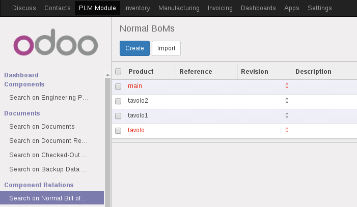
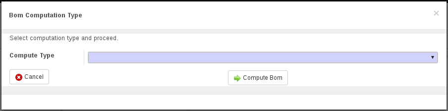

<section class="oe_container oe_dark">
    <div class="oe_row oe_spaced">
        <h2 class="oe_slogan">Plm Date Bom</h2>
        <h3 class="oe_centeralign">Odoo version covered : 10.0</h3>
        <div class="oe_span12">
            <p class="oe_mt32">
				This module allows you view and/or update obsoleted components in a Normal Bill Of Materials using released components.
            </p>
        	
            <p class="oe_mt32">

            	<ul>
					<li>To start working with update procedure you have to navigate in the Normal BOM tree view:</li>
					<br></br>
					<li></li>
					<br></br>
					<li>Here you can see all boms which are currently containing obsoleted components evaluated with red color. To view only the not updated boms you can use the provided filter here:</li>
					<br></br>
					<li></li>
					<br></br>
					<li>Then if you select a Bom in form view you can find two buttons.</li>
					<br></br>
						<ul>
							<li><b>Update Bom</b>: Update the bom following the next choice.</li>
							<li><b>All Related Boms to Update</b>: Open a tree bom view showing all child boms containing obsoleted components.</li>
						</ul>
					<li>Pressing Update Bom a wizard will appear:</li>
					<br></br>
					<li></li>
					<li>Here you have to select your favourite updating procedure.</li>
						<ul>
							<li><b>Update Bom replacing obsoleted bom lines with components at the latest revision</b> : Update all bom lines obsoleted using released components.</li>
							<li><b>Create new bom using last revision of all components</b> : Clone current bom, update obsoleted components using released components and deactivate the obsoleted bom.</li>
						</ul>
				</ul>
            	
            </p>
         </div>
    </div>
</section>